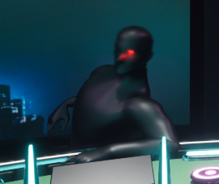
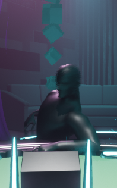
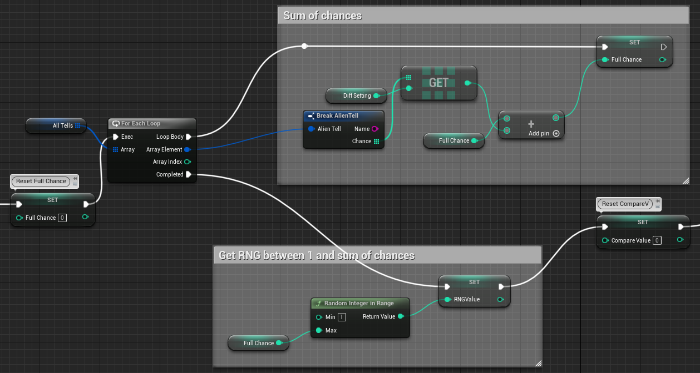
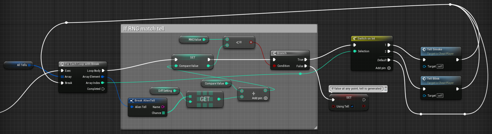
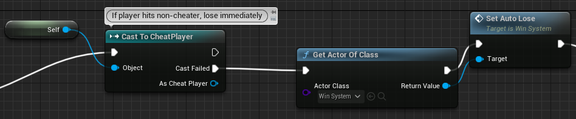
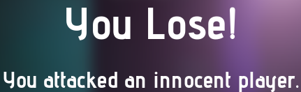
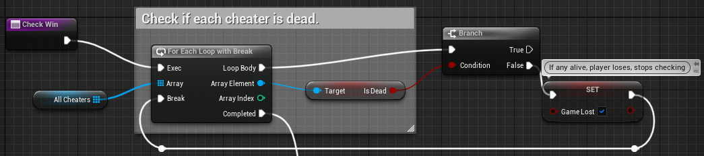
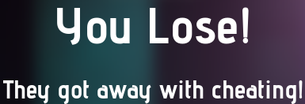
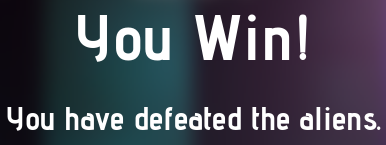

Check out our itch page!
As a casino dealer, you have to make sure each and every customer you have has a chance in winning. Most of the players may seem to be playing fair, but some of them make start acting... suspicious. With the closest projectiles you have, you must attack and get rid of those cheaters with their not-so-human tells.
For this game, I've moreso focused on simple gameplay systems, having just started using Unreal Engine and blueprints, with simple timing-based AI and condition checks.
Those who are cheating will have a visible tell. With our decision to make the cheaters aliens, we were able to be more liberal with our designs of the tells. I made two possible tells: an eye blinking red; and smoking from the back.
The AI is very simple, so I went for a simple design of delaying the call of generating a tell. The delay is randomized so they could appear less predictably.

AlienTell is a class that stores the information of a tell. Each tell will have a different chance of occuring depending on the difficulty, which is based off of what level you're on. The generation works by taking in the chances of each tell occuring, in the form of an integer, adding them together, and randomly generating a number in the range of the sum. By comparing the generated number and the chances of tell occurance, we could figure out which tell is supposed to be generated.
 The conditions of losing is fairly straightforward. You would lose if you attack a player who is not cheating, or if you did not manage to get rid of all the cheaters.
The first one is quite simple. Each time you hit a customer with a die, the game will check if this customer is a cheater with the cast function. If the cast fails, meaning if the customer you hit does not contain the blueprint ChatPlayer, it means you hit the alternative, which is a normal player, and the game automatically ends.
 The second is slightly more involved. Each cheater has a boolean value determining if they're dead. At the start of the round, the blueprint will compile all cheating players into one array. At the end of the round, whether if the time runs out or if the player decides to skip, each cheater is checked to make sure they are all gone. If any of them are alive, you lose the game.
 If both conditions are met, the win screen will pop up at the end instead and you can proceed to the next round.
